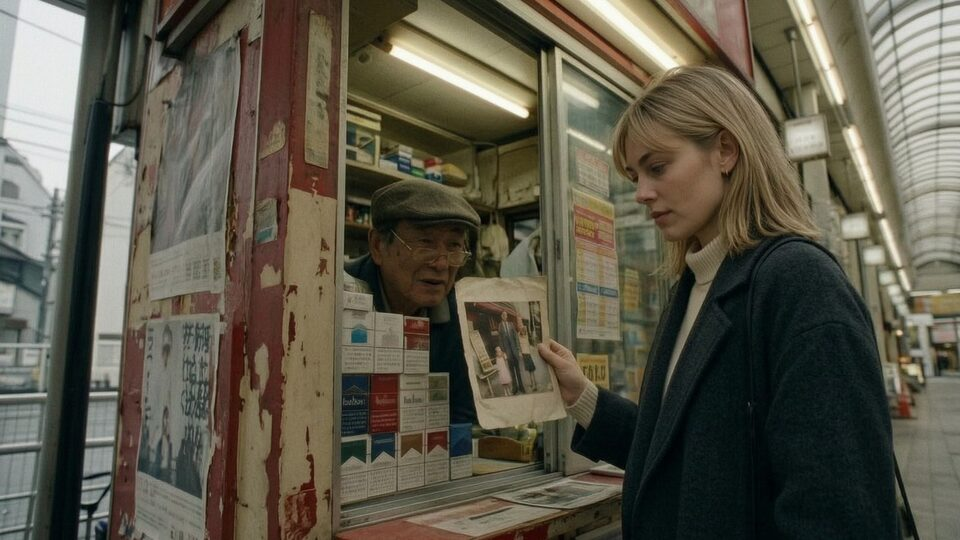
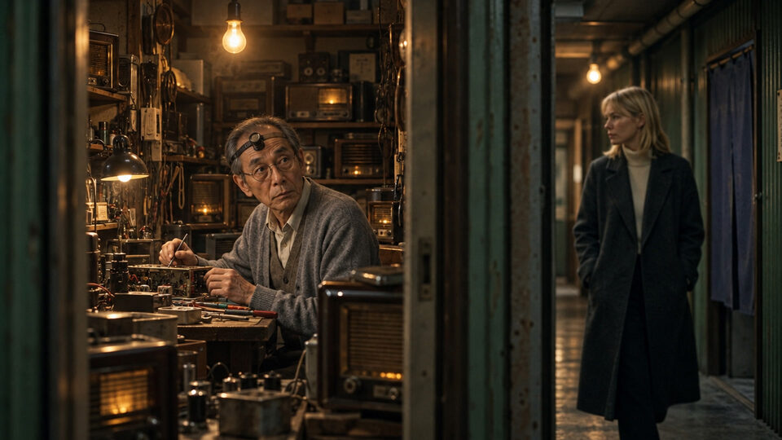

SHOT 01 · nw_s54 · nw_b932 (16.33s -> 8.75s + 7.58s)
It's still there?
“It's still there?”
Surrounding frames


Prompt & references
Create ONE horizontal widescreen 16:9 photorealistic cinematic film still for the Tokyo noir drama Nobody's Witness, bridging the two supplied adjacent reference frames at a shuttered tobacconist's kiosk under the railway in grey daylight. Keep the same place and people: the small old kiosk crammed with cigarette cartons, faded posters, a little counter and a bare bulb, the elderly tobacconist in his flat cap and cardigan behind the grimy glass, and blonde Vera in her dark overcoat and cream turtleneck outside. Compose a closer medium shot from the shop side of the window: Vera leans in toward the grimy glass, holding up a small old photograph of a young woman, and asks her question with careful hope; the tobacconist has turned from his rack and looks at her steadily through the glass, his hand still on the counter. Cold daylight outside, warm bulb inside, dust and reflection on the glass between them, restrained realistic noir cinematography, natural hands and facial anatomy, full 16:9 landscape frame with headroom. No other people, no captions, subtitles, readable invented text or watermarks.
- Preceding shared still:
/film/img/s54/220-everything-is-still-there.jpg - Following still:
/film/img/s55/472-he-glances-up.jpg